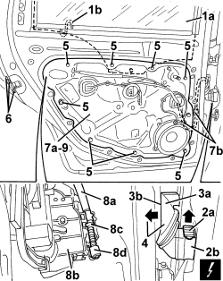
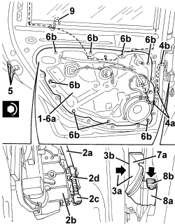

7010A08 REAR SIDE DOOR INTERIOR SUPPORT FRAME - R.R. WITH DOOR PANEL REMOVED
- Path
- Procedures > 70 FITTINGS > 7010 PASSENGER COMPARTMENT REAR SIDE DOORS > 7010A REAR SIDE DOOR ASSEMBLY > 7010A08 REAR SIDE DOOR INTERIOR SUPPORT FRAME - R.R. WITH DOOR PANEL REMOVED
- Kind
- repair procedure (removal / refitting; the operation number is the code)
- Applies to
- all engines; all production periods
- Interactive page
- https://sloeber94.github.io/elrnDB/alfa/159/en/#/939011156
Applies to: all engines; all production periods
 Removing
Removing
 Refitting
Refitting1. Open the access cover to the descending glass retainer.
2. Provisionally connect the window raise handle to control shaft (2a) or the window switch, then move the descending glass until glass drive retainer (2b) is in access position (as shown in the figure).
3. Disconnect retainer (2b) from the glass (3a).

Applies to: all engines; all production periods
1. Raise the window (1a) by hand until it is in the end of travel position, then secure it using a hook (1b).
2. Lift ring nut (2a) and disconnect the door electrical connection (2b).
Description | Component |
|---|---|
REAR JOINT-REAR DOOR LEFT | |
REAR JOINT-REAR DOOR RIGHT |
3. Release the bulkhead coupling (3a) from the door frame opening (3b).
4. Push the electrical connection into the door frame as far as possible.
5. Undo the bolts fixing the support frame.
6. Loosen the lock fixing bolts.
7. Slightly move aside support frame (7a) from the front edge and release wiring retainers (7b).
8. Disconnect link (8a) form the door lock (8b), undoing retainers (8c) and (8d).
9. Recover the support frame.

Applies to: all engines; all production periods
- If necessary carry out
Applies to: all engines; all production periods
Refitting
Removing- Check that the support frame is not damaged.
- If necessary carry out
Op. 7205E39 STRIPPING REAR SIDE DOOR INTERIOR SUPPORT FRAME
1. Before positioning support frame (1a), check that the perimeter seal (1b) is undamaged and clean. Also check that the contact surface on the door frame is clean.

Applies to: all engines; all production periods
1. Position the support frame.
2. Connect link (2a) to door frame (2b), doing up retainers (2c) and (2d).
3. Fit connection (3a) into the door frame so that it emerges from opening (3b).
4. Secure the wiring to retainers (4a).
Check that wiring (4b) does not interfere with glass movement.
5. Tighten the lock fixing bolts.
Component | Fastening | dia | Value (daNm) | Validity |
|---|---|---|---|---|
REAR DOOR OUTER TRIM | Bolt | M6x12 | 0.7 ÷ 1.1 |
6. Place frame (6a) in position and secure it using the bolts (6b).
Component | Fastening | dia | Value (daNm) | Validity |
|---|---|---|---|---|
REAR DOOR OUTER TRIM | Bolt | M6x12 | 0.7 ÷ 1.1 |
7. Fit the bulkhead coupling (7a) to the door frame opening (3b).
8. Connect electrical connection (8a) to the door and secure with ring nut (8b).
9. Remove the window retaining hook.

Applies to: all engines; all production periods
- Lower the window until it fits into the drive retainer.
- Position the rear channel descending section in its housing and secure with bolts.
- Close the access cover to the descending glass drive retainer.
- Move the window to check its operation.
Topics linked from this page (3)
- 7205E39 STRIPPING REAR SIDE DOOR INTERIOR SUPPORT FRAME
- D035 LEFT REAR DOOR COUPLING
- D036 RIGHT REAR DOOR COUPLING
Topics that link to this page (11)
- 5505B21 REAR DOOR WIRING (ONE) LEFT OR RIGHT - R.R
- 7010A09 REAR SIDE DOOR INTERIOR SUPPORT FRAME - R.R.
- 7010A28 REAR SIDE DOOR OPENING LIMITER - R.R
- 7010C10 REAR SIDE DOOR EXTERIOR HANDLE - R.R WITH DOOR PANEL REMOVED
- 7010C11 REAR SIDE DOOR EXTERIOR HANDLE - R.R
- 7010C64 EXTERIOR HANDLE TO HANDLE REAR SIDE DOOR LOCK CONNECTING ROD - R.R. WITH PANEL REMOVED
- 7010C65 CONNECTING ROD FROM EXTERIOR HANDLE TO REAR SIDE DOOR LOCK - R.R.
- 7010D21 FRONT SIDE DOOR GLASS FRONT GUIDE (1), LH OR RH - R R
- 7010D35 REAR SIDE DOOR MANUAL WINDOW MECHANISM (ONE), LEFT OR RIGHT - R.R.
- 7010N21 REAR SIDE DOOR LOCK MOTOR/LOCK ASSEMBLY, LEFT OR RIGHT - R.R
- 7010M26 ELECTRIC WINDOW OPENING MECHANISM FOR ONE REAR DOOR LH OR RH - R.R